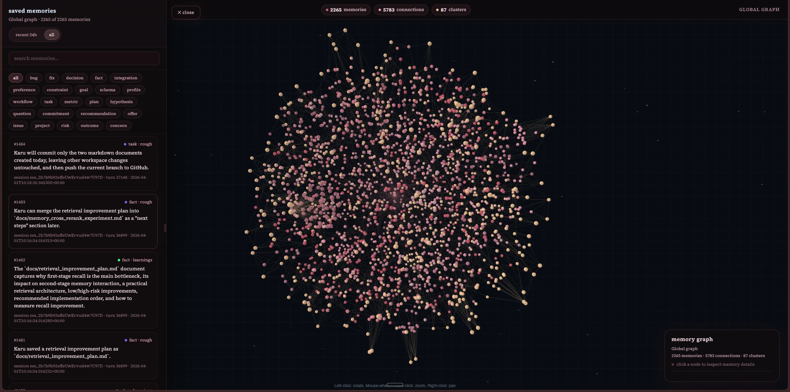

Your coding agentshould remember.
It saves the context worth keeping.
Decisions and preferences, ready for the next session.
✦ The context behind this answer ⌄
Earlier decision · Keep SQLite so the app remains usable offline.
Source · An earlier Pi session and its available evidence. The agent should verify historical context against current code.
Live Codex session on local SQLite memory, first search at 4x
Compact leads. Complete source scenes.
Search a memory. Open its original conversation.
The compact memory
A concise, high-value fact: a design decision, user constraint, preference, or outcome. Indexed for rapid semantic discovery without flooding prompt context.
Fast semantic discoveryThe primary source scene
The complete dialogue turn preserved in local SQLite. Preserves speaker nuance, exact code snippets, dates, and qualifications behind each memory.
Verifiable evidenceThe active investigator
Rather than passively guessing from snippet previews, the agent searches leads, opens original scenes, resolves timelines, and verifies facts before answering.
Grounding loopA map of remembered work.
Explore linked memories and their sources.

95.4% accuracy across 500 multi-session challenges.
LongMemEval-S · Sol/high reader · Astra/high judge.
ollama pull nomic-embed-text:v1.5 pi install npm:titan-pi-memory /titan-setup /titan-key /titan-status
Pi also requires Python 3.10+ and an extraction provider. See setup requirements.
less repeating. more remembering.
Titan gives your coding agent the context it forgot.